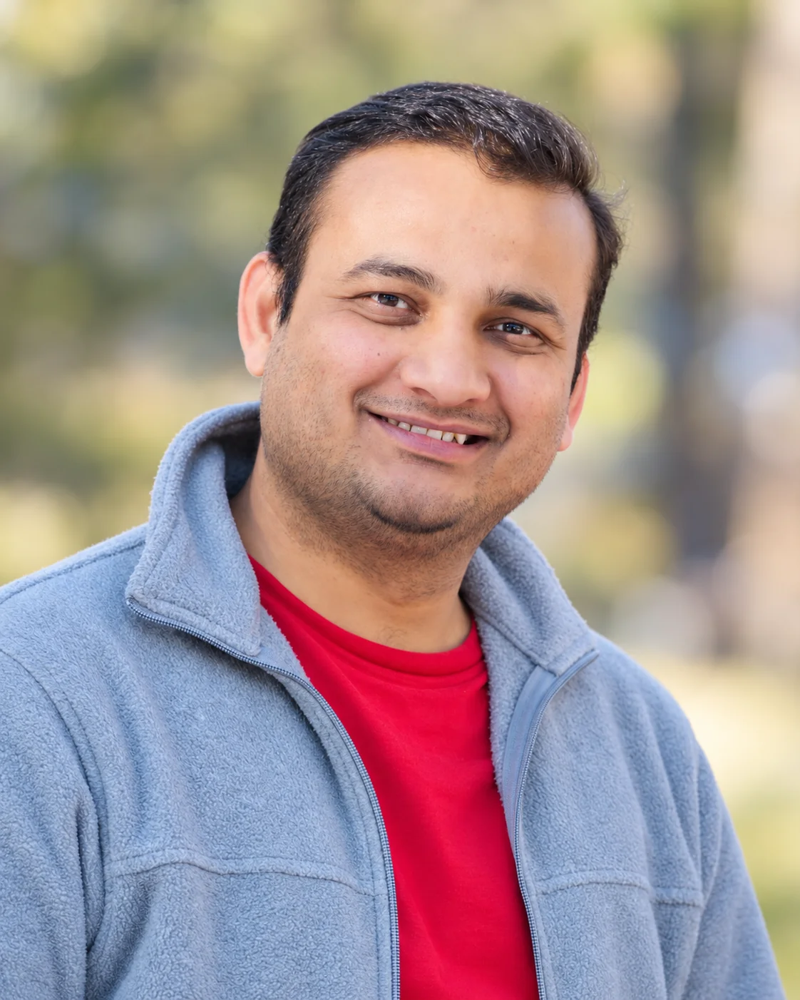

A little about me
A bit about what I love to learn, explore, and create.

Curiosity, computing, and everything in between.
Hello! I'm Mohammad Faridul Haque Siddiqui, an Assistant Professor of Computer Science at West Texas A&M University in Canyon, Texas.
I've always enjoyed figuring out how things work, learning something new, and, perhaps most of all, creating things that interest me. Sometimes that means writing a piece of software, experimenting with a new technology, building an interactive system, or simply exploring an idea to see where it leads.
My academic work is primarily centered around artificial intelligence, human-computer interaction, and intelligent systems. I'm particularly interested in how technology can better understand people and how we can design systems that make our interactions with computers more natural and meaningful. Over the years, this curiosity has taken me through areas such as emotion recognition, computer vision, augmented and virtual reality, robotics, and more recently, large language models and generative AI.
What I enjoy about computer science is that there's always something new to explore. I don't particularly like limiting myself to one technology or research direction. If an idea catches my attention, I enjoy learning about it, experimenting with it, and seeing whether I can turn it into something useful—or simply something interesting.
I believe that understanding something is often more rewarding than merely knowing how to use it. I enjoy asking questions, challenging assumptions, and looking at problems from different perspectives. The more I learn about a subject, the more I appreciate its complexities and the questions that remain unanswered.
Teaching is an equally important part of my life. I enjoy helping students understand concepts beyond their textbook definitions and encouraging them to explore how ideas work in practice. I especially enjoy working on projects where students can experiment, make mistakes, discover solutions, and eventually create something of their own. Seeing an idea gradually evolve into a working system is one of the things I find most satisfying.
Outside my immediate research interests, I enjoy reading and learning about a wide range of subjects, particularly science, history, technology, and the questions that connect them. I find it fascinating how ideas from seemingly unrelated fields can change the way we understand familiar things.
This website is my little space on the internet, where I share some of the research I'm involved in, the things I build, the courses I teach, and ideas that I find worth exploring.
Thanks for stopping by!